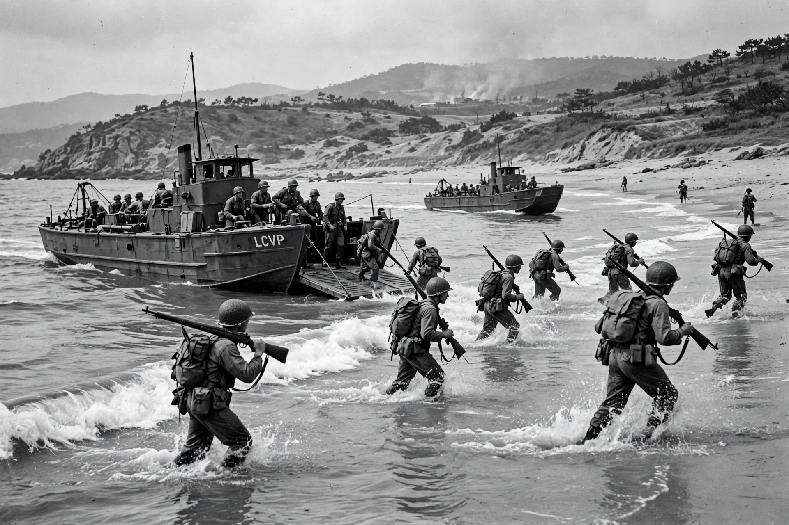

From Wikipedia, the free encyclopedia
| Korean War | |
|---|---|
 | |
| Date | 25 June 1950 – 27 July 1953 (armistice) |
| Location | Korean Peninsula |
| Belligerents | South Korea and the UN Command (led by the United States) vs. North Korea, China, and the Soviet Union (covert air support) |
| Result | Military stalemate; Korean Armistice Agreement; peninsula remains divided |
| Casualties | c. 2–3 million total deaths, the majority civilians |
The Korean War was an armed conflict on the Korean Peninsula fought between North Korea (the Democratic People's Republic of Korea) and South Korea (the Republic of Korea) from 25 June 1950 to 27 July 1953. The war began when North Korea invaded South Korea following years of clashes along the 38th parallel, the line along which the peninsula had been divided between Soviet and American occupation zones in 1945. The United Nations, with the United States as the principal force, intervened on behalf of South Korea, and the People's Republic of China intervened on behalf of North Korea, with material and covert air support from the Soviet Union.
North Korean forces overran most of the South within weeks, compressing the defenders into the Pusan Perimeter. General Douglas MacArthur's amphibious landing at Inchon (15 September 1950) reversed the war: Seoul was retaken and UN forces advanced toward the Yalu River. China's intervention in late October–November 1950, with hundreds of thousands of "People's Volunteers", drove the UN back below the 38th parallel and retook Seoul before UN counter-offensives stabilised the front near the original line in mid-1951. MacArthur was dismissed by President Truman in April 1951 after publicly advocating escalation against China.
For the remaining two years the war was a static struggle of attrition — battles such as Bloody Ridge, Heartbreak Ridge, and Pork Chop Hill — accompanied by a massive US bombing campaign against the North and protracted armistice negotiations at Panmunjom. The Korean Armistice Agreement, signed on 27 July 1953, established the Korean Demilitarized Zone and a Military Armistice Commission, but no peace treaty followed: North and South Korea remain technically at war, and some 28,500 US troops remain stationed in the South.
The war killed an estimated two to three million people, most of them Korean civilians, devastated both Korean states, and entrenched the division of the peninsula. It set defining patterns for the Cold War: limited war under the nuclear shadow, US containment policy in Asia, and the precedent of UN-authorised collective defence. In the United States it is sometimes called the "Forgotten War" for the relative lack of public attention it received compared with the Second World War and Vietnam War.
Douglas MacArthur · Battle of Inchon · Korean Armistice Agreement · Korean Demilitarized Zone · 38th parallel north